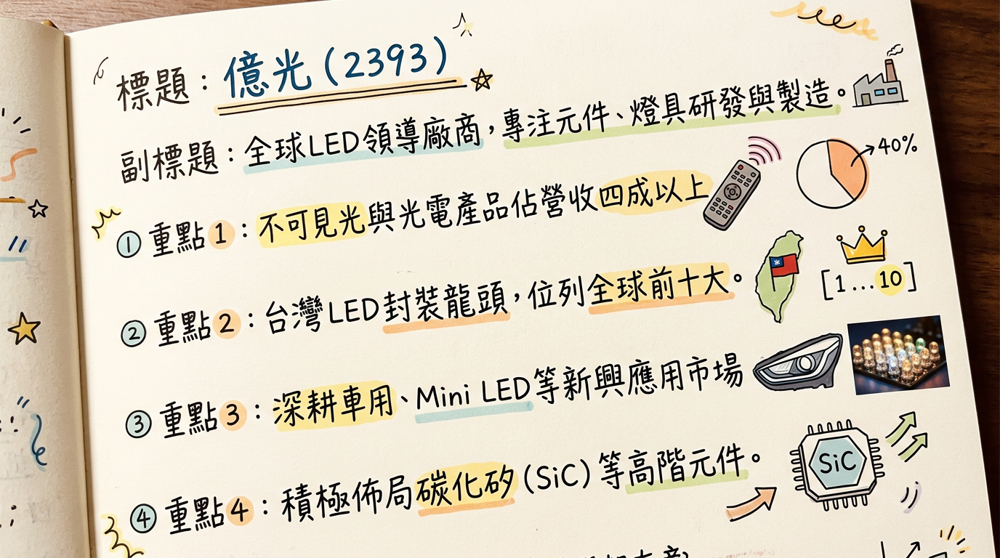
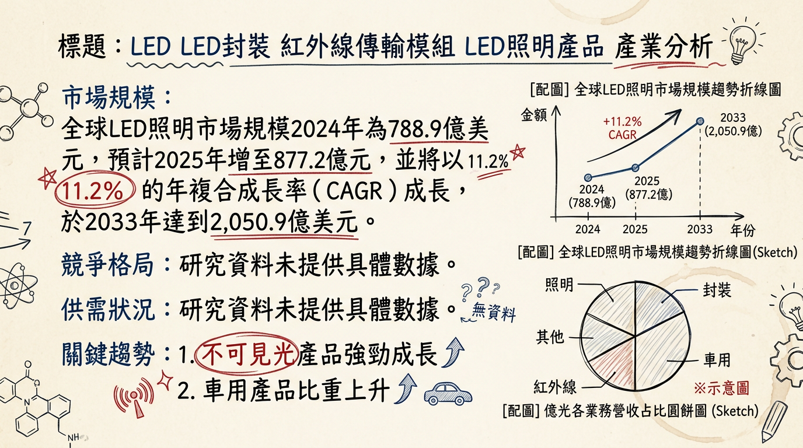
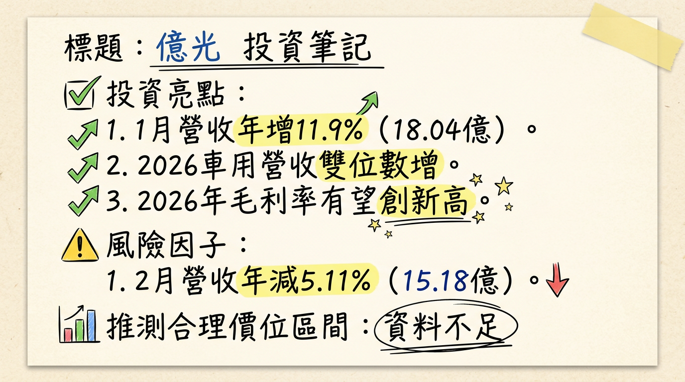

2393 億光 深度研究報告
一句話摘要
億光作為全球LED封裝領導廠商，正受惠於高毛利的不可見光與車用產品強勁成長，並積極佈局碳化矽(SiC)元件及AI伺服器電源管理，產品組合優化帶動毛利率挑戰新高，預期2026年獲利將顯著優於2025年，然泰國設廠延遲與匯率波動為潛在風險。
公司概覽
億光電子工業股份有限公司（股票代碼：2393）成立於1983年，為全球LED產業領導廠商之一，擁有逾40年經驗，專注於LED元件及燈具的研發、製造與銷售。其產品涵蓋可見光與不可見光產品，並在全球多地設有生產據點。
主要業務與產品線：
- LED封裝元件： 發光元件及感測元件封裝，為台灣LED封裝龍頭，全球前十大。
- 光電產品： 包含可見光及不可見光產品，其中不可見光產品（光耦合器、紅外線傳輸、感測元件）表現突出。
- LED照明產品： 製造與銷售LED燈具，自有品牌「EVERLIGHT」和「ZENANO」。
- 新興應用產品： 車用LED頭燈、Mini LED、Matrix顯示、碳化矽（SiC）元件等。
營收結構 (2025年數據)：
| 產品線分類 | 營收佔比 (2025上半年) | 營收佔比 (2025第三季) | 備註 |
|---|
| 不可見光與光電產品 | 四成以上 | 39% | 毛利率最佳，成長主力 |
| 車用產品 | 13% | 14% | 成長潛力大，預計2026年雙位數成長 |
| 消費型電子產品 | - | 23% | - |
| 照明產品 | 9% | - | 佔比與毛利率較低 |
| 背光產品 | 14% | 13% | 佔比持續下降，預估2026年降至11% |
- 台灣： 苑裡廠、土城廠、銅鑼廠。
- 中國大陸： 蘇州吳江廠、廣東中山廠。
- 產能分佈： 兩岸工廠產能約各佔一半。泰國廠投資計畫因關稅政策不明朗而延遲。
核心競爭優勢
- LED封裝龍頭地位與技術積累： 擁有超過40年的產業經驗，為台灣LED封裝龍頭，位列全球前十大，具備深厚的研發與製造能力。
- 不可見光與車用領域領先者： 在紅外線光耦合器領域市佔率居全球第一。車用產品已成功打入歐美車廠一級供應鏈，預期將持續維持雙位數成長。
- 高毛利產品組合優化： 策略性聚焦高毛利不可見光與車用產品，並積極佈局第三代半導體碳化矽(SiC)元件及AI相關應用，有效提升整體獲利能力。
- 穩健的財務體質： 淨現金部位超過120億元，負債比率低，資本支出相對保守，能靈活應對市場變化。
- 多元新興應用佈局： 積極發展AI伺服器電源管理、機器人感測、智慧穿戴、AR/VR裝置等新興應用，開拓新的成長空間。
財務分析
月營收趨勢 (單位：億元新台幣)
| 月份 | 金額 | 月增率 MoM | 年增率 YoY |
|---|
| 2026年2月 | 15.18 | -15.87% | -5.11% |
| 2026年1月 | 18.04 | +12.62% | +11.86% |
| 2025年12月 | 16.02 | +2.49% | +0.41% |
| 2025年11月 | 15.63 | +7.25% | -3.94% |
| 2025年10月 | 14.58 | -10.16% | -15.54% |
| 2025年9月 | 16.22 | -0.61% | -7.48% |
季度數據 (2025年第三季)
- 營收： 49.18 億元
- 毛利率： 31.54%
- 營業利益率： 12.79%
- EPS： 1.29 元
年度趨勢
- 2024年實際 EPS： 6.64 元
- 2025年實際營收： 196.37 億元 (累計至2025年12月)
- 2025年預估 EPS： 4.49 ~ 4.73 元 (法人機構平均預估)
- 2026年預估 EPS： 5.2 ~ 5.92 元 (法人機構平均預估)
法說會重點 (2025年8月29日)
*
不可見光與光電產品： 佔2025上半年營收四成以上，毛利率最佳，應用廣泛於充電樁、智能家居、智能手機、人臉辨識、工控自動化等。
* 車用產品： 佔比約13%，成長潛力大，應用涵蓋車內外照明、IR偵測、電源隔離等。2025年已推出具競爭力的LED頭燈產品。
* 照明及背光產品： 佔比較低（9%及14%），毛利率較差，公司持續優化產品組合，降低其比重。
- 訂單能見度與展望： 管理層表示，2025年下半年車用與不可見光產品線為成長主力，毛利率預期向上。然而，2026年2月報告指出，2025年下半年接單能見度偏低，導致2026年上半年景氣展望仍不明朗。
- 資本支出： 每年約新台幣5億元，主要用於新產品開發及機器設備改良。
- 2026年展望： 預期2026年車用營收將有雙位數成長幅度。不可見光應用（如高階大功率光耦合器、車用LED頭燈）預期自2026年起逐步放量，有望在2026年第二季帶動營運重回成長軌道。毛利率可望維持在32%以上，甚至挑戰新高。
- 泰國設廠計畫： 因關稅政策不明朗，目前處於停滯狀態。
- 非大陸產能要求： 來自歐美客戶（特別是車用、伺服器和AI伺服器）要求非大陸與非台灣的產能配置，億光正持續關注因應。
券商觀點
| 券商名稱 | 目標價 (新台幣) | 評等 | 日期 | 備註 |
|---|
| 元大投顧 | 62 元 | 持有 | 2025/11/17 | 唯一找到具體目標價，評等為「區間持有」 |
- 2025年 EPS 預估： 法人機構平均預估約 4.49 ~ 4.73 元。
- 2026年 EPS 預估： 法人機構平均預估約 5.2 ~ 5.92 元。
財報深度分析
利潤率趨勢 (單位：%)
| 季度 | 毛利率 | 營業利益率 | 稅後淨利率 |
|---|
| 2025年Q3 | 31.54 | 12.79 | 11.85 |
| 2025年Q2 | 32.09 | 15.43 | 6.42 |
| 2025年Q1 | 30.39 | 12.42 | 11.80 |
| 2024年Q4 | 27.60 | 8.01 | 19.45 |
| 2024年Q3 | 30.40 | 12.85 | 10.01 |
| 2024年Q2 | 32.53 | 14.62 | 15.15 |
| 2024年Q1 | 30.36 | 10.95 | 15.52 |
億光利潤率的改善主要歸因於：
- 產品組合優化： 積極提升高毛利不可見光與車用產品的營收比重，並降低低毛利照明及背光產品的佔比。不可見光與光電產品毛利率最佳。
- 成本控制與固定費用下降： 資本支出控制得宜，折舊費用持續下降，對毛利率產生正面助益。
- 處分低毛利業務： 2025年上半年處分低毛利子公司，雖影響營收，但有助於提升整體毛利率。
- 匯率波動： 逾八成營收以外幣計價（其中美元佔六成），匯率波動對業外損益及淨利率影響甚鉅。例如2025年上半年受匯損影響導致EPS下滑。
存貨與營運
| 季度 | 存貨週轉天數 | 應收帳款收現天數 |
|---|
| 2025年Q3 | 28.27天 | 111.82天 |
| 2025年Q2 | 26.23天 | 106.79天 |
| 2025年Q1 | 26.91天 | 107.43天 |
| 2024年Q4 | 26.75天 | 110.00天 |
- 存貨分析： 2024年第一季至2025年第三季存貨週轉天數波動不大，維持在23.74天至28.27天之間，顯示公司存貨管理健康，未有異常堆積。
- 應收帳款分析： 應收帳款收現天數在2025年呈現略微上升趨勢，從2024年Q1的95.12天增至2025年Q3的111.82天，需持續關注收款效率。
資本支出
- 近3年資本支出： 億光每年資本支出維持約新台幣5億元，顯示其審慎且受控的資本策略。2025年預計資本支出擴增至逾5億元，用於新產品開發及機器設備改良。
- 稼動率： 目前稼動率維持在七成左右，公司將視營收動態進行調整。
- 折舊攤銷： 2025年Q3折舊為2.14億元，攤銷為0.16億元。折舊費用持續下降對毛利率有正面助益。
股權異動
* 2025年11月至12月，董事周博文及其配偶多次以贈與方式轉讓股票，每次各250張給子女。
* 2025年3月21日，周博文之配偶曾申報轉讓300張股票。
- 庫藏股買回： 未找到2024年以後的庫藏股買回紀錄。
- 可轉換公司債(CB)： 存在「億光六」（代號：23936）。
* 最新CB收盤價：99.8元。
* 目前轉換價：57.9元 (發行時轉換價：80.0元)。
* 轉換溢價率：81.4%。
- 增減資計畫： 未找到2024年以後的現金增資或減資計畫。
- 股利政策： 維持穩健且高配發率的股利政策。
*
2025年 (2024年股利)： 預計發放現金股利5.31元。
* 2024年 (2023年股利)： 發放現金股利3.2元。
* 公司淨現金部位約123億元，維持約80%的高股利配發率。
產業分析
市場規模與成長率
| 市場類別 | 2024年估值 | 2025年估值 | 2026年估值 | CAGR (預估期間) | 備註 |
|---|
| 全球LED照明市場 | 788.9億美元 | 877.2億美元 | - | 11.2% (至2033年) | 部分報告預估，2033年達2050.9億美元 |
| 全球LED照明市場 | - | 1091.1億美元 | 1232.4億美元 | 13.4% (2026-2034) | 另一報告預估 |
| 全球LED照明市場 | - | 1049.3億美元 | 1107.6億美元 | 5.55% (2026-2031) | 另一報告預估 |
| 全球LED照明市場 | - | 566.26億美元 | - | - | TrendForce預計2025年正向回升 |
| 商用LED照明市場 | - | 185.2億美元 | 201.1億美元 | 9.32% (2026-2032) | - |
| 全球LED顯示市場 | - | - | - | 14.8% (至2029年) | 預計2029年達168億美元 |
| 車用LED市場 | - | 34.51億美元 | - | - | 2025年估值 |
| 車用車燈市場 | - | 357.29億美元 | - | - | 2025年估值 |
- 2025年： LED照明市場因高性價比方案與低成本競爭，面臨均價跌幅擴大及訂單能見度低迷。
- 2026年： 全球LED照明市場將由衰轉穩，終端庫存回歸健康水位，整體需求逐步重回基本盤。
- 競爭加劇： 全球供應鏈轉移及產能擴大導致競爭激烈，關稅政策（如美國關稅）持續影響出口。
- 產業平均毛利率： 面臨激烈競爭壓力，但市場正從價格戰轉向價值提升。
競爭格局
備註：
- 全球LED廠： TrendForce資料顯示，22024年全球前10大LED廠商的市佔率高達93%，其中前3大廠商就佔了55%，顯示產業高度集中。
- 車用LED市場： 2024年前五大廠商為艾邁斯歐司朗、日亞化學、Lumileds、首爾半導體、Dominant。
- 台灣同業比較 (財務數據未直接提供可比資料)：
*
富采 (3714)： 一站式解決方案供應商，2025年2月合併旗下晶元光電與隆達電子，聚焦車用、先進顯示、智能感測與AI光通訊等高附加價值領域。
* 艾笛森 (3591)： 營運重心轉向車用市場與高階感測元件，去年第四季車用產品佔合併營收比重已首度突破51%。
產業趨勢
*
趨勢： Mini LED背光技術廣泛應用於平板、筆電、電視、車用顯示，提供高對比、亮度、色彩精準度。Micro LED是下一代顯示技術，具卓越亮度、長壽命、高溫耐受性，有望取代OLED。2025年Mini LED背光產品出貨量預計年增30%。
* 影響： 推動高端顯示市場（AR/VR眼鏡、車用顯示），Micro LED也將應用於自適應性頭燈，提升行車安全。
- 智慧照明與物聯網 (IoT)/人工智慧 (AI) 整合：
*
趨勢： 智慧照明系統與AI、數據分析結合日益普及。LED產品從靜態設備演進為具感知學習能力的系統節點，受益於AI調光、全光譜控制和軟體定義照明 (SDL)。
* 影響： 提升能源效率、用戶便利性和舒適度，創造健康環境。照明產品將成為智慧生活、城市治理及工業數位化體系中的關鍵感知與交互節點。
*
趨勢： 電動車普及推動車用LED需求激增，智慧頭燈、氛圍燈、貫穿式尾燈成標配。車用LED與車燈市場產值預計2025年分別成長至34.51億美元與357.29億美元。
* 影響： 汽車照明朝個性化、溝通顯示、駕駛輔助與安全升級發展。
對億光的機會與威脅
*
不可見光和車用領域的領先地位： 受惠於電動車和智慧感測的成長趨勢，紅外線光耦合器和感測元件市場優勢，以及車用LED供應鏈佈局。
* 新技術佈局： 積極發展AR/VR/智慧眼鏡相關感測元件，以及碳化矽（SiC）元件在工業充電樁和AI電源市場的應用。
* 智慧化與客製化需求： 智慧照明和物聯網發展帶來軟硬體整合和場景化應用解決方案的機會。
*
傳統市場競爭激烈： 傳統照明和背光市場價格競爭激烈，對毛利率構成壓力。
* 地緣政治與關稅不確定性： 關稅政策和國際局勢不確定性可能影響全球供應鏈佈局。
* 客戶對產能地域要求： 客戶要求非大陸與非台灣產能配置，迫使億光調整供應鏈和投資策略，如泰國廠進度受阻。
相關投資題材 (與AI、電動車的具體連結)
*
AI伺服器與機器人： 億光積極導入AI伺服器電源管理，其光耦合器與感測元件已成功應用於機械手臂與掃地機器人，並切入人形機器人感知鏡頭。碳化矽（SiC）元件鎖定AI電源市場。
* 光通訊 (CPO)： Micro LED CPO方案有望在生成式AI帶動的高速傳輸需求下，成為光互連的替代方案，降低資料中心能耗。
* 電動車滲透率提升，帶動高階車用照明需求穩定增長。億光已打入歐美車廠一級供應鏈，車用業務預期將有雙位數成長。
- HBM (高頻寬記憶體)： 目前未發現億光或LED產業與HBM的直接相關連結。
近期催化劑
利多事件：
- 2026年2月6日： 2026年1月營收達18.04億元，月增12.6%，年增11.9%，創近9個月新高，主要受惠於車用及不可見光產品需求強勁。
- 2026年2月4日： 產品組合優化，不可見光與車用成長強勁，碳化矽MOSFET與AR感測元件布局有成，預期2026年毛利率有望挑戰新高。
- 2026年1月26日： 積極導入AI伺服器電源管理，光耦合器與感測元件成功應用於機械手臂與掃地機器人；碳化矽(SiC)元件進入試產階段，鎖定工業充電樁與AI電源市場，將開闢新獲利渠道。
- 2026年2月13日： 億光就車用LED與高功率LED等產品線，對首爾半導體提起專利侵權訴訟，展現保護智慧財產權的決心。
利空事件：
- 2026年3月5日： 2026年2月營收15.18億元，年減5.11%。
- 2026年2月： 2025年下半年接單能見度偏低，導致2026年上半年景氣展望仍不明朗。
- 泰國廠投資計畫： 因關稅政策不明朗而延遲，尚未投入生產，影響供應鏈彈性。
- 匯率波動： 逾八成營收以外幣計價，匯率波動對毛利率影響大，如2025年上半年受匯損影響淨利。
⭐ 成長動能時間軸
| 時間點 | 成長動能 | 具體內容 |
|---|
| 2025年 | 新客戶/新市場： AR/VR/智慧眼鏡合作、非大陸/非台灣產能需求 | 與AR、VR及智能眼鏡主要廠商皆有合作，待市場量能提升後，相關佔比可望同步成長。客戶已開始要求非大陸與非台灣產能配置，主要來自車用與伺服器、AI伺服器應用。 |
| 2025年 | 需求面： 高階大功率產品、電動車趨勢 | 高階大功率產品中的光耦合器可應用於太陽能發電廠、充電樁等設備；感測元件廣泛用於穿戴裝置、人臉辨識等應用。電動車趨勢發展，車載背光將成為主力發展方向。 |
| 2026年Q1 | 新客戶/新市場： AI伺服器電源管理、機器人感測、碳化矽(SiC)量產 | 積極導入AI伺服器電源管理。光耦合器與感測元件已成功應用於機械手臂與掃地機器人，並切入人形機器人感知鏡頭。碳化矽(SiC)元件鎖定工業充電樁與AI電源市場，已進入試產階段。 |
| 2026年Q2 | 新產品放量： 高階大功率光耦合器、新LED頭燈 | 高階大功率光耦合器及新推出的LED頭燈預計將於2026年第二季開始放量，帶動營運重回成長軌道。 |
| 2026年 | 需求面： 車用與不可見光產品需求強勁、智慧座艙滲透率提升、工控穿戴應用拓展 | 下游車用與不可見光產品需求持續強勁。智慧座艙滲透率顯著提升，帶動車內外照明以及紅外線感應產品需求大幅成長。不可見光產品在工控、穿戴裝置等領域的應用持續拓展。 |
| 長期 | 產能擴充： 公司持續擴充產能 | 億光正在擴充產能以應對成長需求，但資本支出相對保守，每年約5億元。 (泰國廠因關稅政策不明朗而延遲，尚未投入生產，此為潛在風險同時也是未來潛在產能擴充機會)。 |
2026 展望
成長動能：
- 獲利動能優於2025年： 管理層與法人預期，隨著面板景氣調整結束，加上車用與不可見光產品維持雙位數成長，2026年獲利將優於2025年。
- 產品組合持續優化： 高毛利不可見光與車用產品為主要成長驅動力，搭配碳化矽(SiC)與AR感測元件的布局，預計2026年毛利率將挑戰新高32%以上。
- 新興應用放量： AI伺服器電源管理、機器人感測、工業充電樁等SiC應用，以及車用LED頭燈，將自2026年起逐步放量，開闢新的獲利渠道。
- 車用市場雙位數增長： 法人預估2026年全年車用營收將呈現雙位數增長。
風險：
- 總經與地緣政治不確定性： 國際局勢和關稅政策的不確定性，可能影響全球供應鏈穩定及訂單能見度。
- 匯率波動風險： 億光大部分營收以美元計價，匯率波動對毛利率和業外損益影響甚鉅。
- 全球車市及供應鏈庫存： 若全球車市銷售狀況不如預期，或供應鏈庫存調整持續，可能影響車用產品成長力道。
- 泰國廠投資延遲： 泰國廠因關稅政策不明朗而停滯，可能影響長期產能規劃及非陸/非台產能配置需求。
投資結論
產品組合轉型顯著，獲利結構改善： 億光成功將重心轉向高毛利的不可見光與車用產品，並積極佈局碳化矽(SiC)元件及AI相關應用，有效提升整體毛利率至32%以上，擺脫傳統LED產品的價格競爭，具備長期獲利成長潛力。
新興動能挹注，2026年展望樂觀： 受惠於電動車滲透率提升帶動的車用LED需求，以及AI伺服器電源管理與機器人感測等新應用，加上碳化矽元件的試產與高功率光耦合器的放量，預期2026年營收及獲利將恢復雙位數成長。
穩健財務與高股利政策提供下檔支撐： 公司擁有超過120億元的淨現金，負債比率低，財務體質強健。同時，維持約80%的高股利配發率，提供股東穩定的現金流回報，有助於降低投資風險。
市場預期2026年EPS為5.2~5.92元： 綜合產業趨勢與公司策略，我們認為億光在優化產品組合、拓展新興應用上已取得成果。考量其LED封裝龍頭地位、高毛利產品比重提升以及2026年獲利動能預期，給予其2026年預估EPS 11~13倍本益比的評價。
具體目標價區間建議： 根據2026年預估EPS 5.2~5.92元，並參考法人平均預估與市場評價，建議投資人可將目光放在
60元至77元的區間。
本報告由 AI 自動產生，資料來源為公開網路資訊，僅供參考，不構成投資建議。產生時間：2026-03-09 21:59
📊 資訊卡


